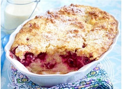

Kirschmichel
Zubereitungszeit: 80 min
Ergibt: 2 große Portion

- 750g Kirschen
- 200g Weißbrot/Brötchen
- 200ml Milch
- 4 Eier
- 100g + 2 EL Butter
- 100g + 2 EL Zucker
- Fett und Semmelbrösel für die Form
- Kirschen waschen, entstielen und entsteinen oder den Saft abgießen (aus dem Glas)
- Eine Hohe Auflaufform fetten und mit Semmelbröseln bestreuen
- 200g Weißbrot würfeln und mit 200ml Milch ca. 10 min einweichen
- 4 Eier trennen, 100g Butter und 100g Zucker cremig rühren, Eigelbe einzeln unterrühren
- Brotmasse unterheben, Eiweiß mit einer Prise Salz steif schlagen und Portionsweise unterheben
- Brotmasse und Kirschen abwechselnd in die Form schichten, mmit Brotmasse abschließen
- Im vorgeheizten Backofen (150° C Umluft) 50-55 min backen. 10 min vor Ende je 2 El Butter und Zucker über den Kirschmichel streuen